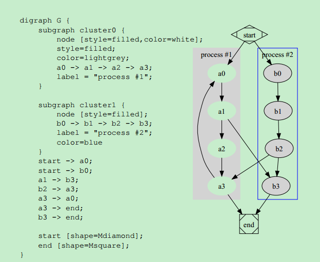

GraphViz Note
Updated:
Contents
分类
graph 无向图
代码形式：123graph test2{ A -- B; A -- C; B -- D; C -- D}
digraph 有向图
代码形式：
123 digraph test1{ A -> B; A -> C; B -> D; C -> D}
按字面意思知道，有向图和普通无向图的区别在于一个有箭头表明指向，一个没有。所以在代码形式上，一个使用-> ， 一个使用–，非常形象。
subgraph 子图
subgraph是嵌在graph或者digraph中的，有点像是c语言中的函数
下图是一个使用subgraph的例子

cluster
cluster是subgraph中名字前缀为cluster的图。使用cluster会在subgraph的外围加一个框
属性
graph
graph指使用dot画出的整个图。他可以设置的属性如下表：
node
node是指流程图中的一个节点。
有如下属性：
edge
可以理解为图形的外框。比如矩形框，椭圆框，箭头等。它有如下属性：
生成方法
安装GraphViz后，将目录下的bin添加到环境变量。然后在命令行中输入如下命令即可。
dot -Tpng xx.dot -o xx.png
- -Tv 表示生成一个v类型的图片，V的取值有：png,ps,pdf,svg等等。v的取值和插件有关系。查看自己是否安装了支持的格式，可使用 dot -Tv 然后查看warning message，看是否支持该中图片格式。
- xx.dot 源文件格式
- -o 输出文件
- xx.png 输出文件的名字
解决中文乱码
- 保存源码格式为 utf-8。
- 声明字体为支持汉字的字体比如1node[fontname="FangSong"]
默认的字体为Times-Roman，中文会乱码。
如果上两步报错，或者还是乱码，就不要用png格式了，用svg，支持的字体会多一些，而且网页显示效果好(不过github readme不支持)。参考资料
- www.graphviz.org 官网
- Graphviz安装目录下 \share\graphviz\doc有不少文档
- dot语法手册 《Drawing graphs with dot》
其他用法
- 结合脚本(sh,python,powershell等)可视化显示流程
- 内嵌Graphviz
- doxygen